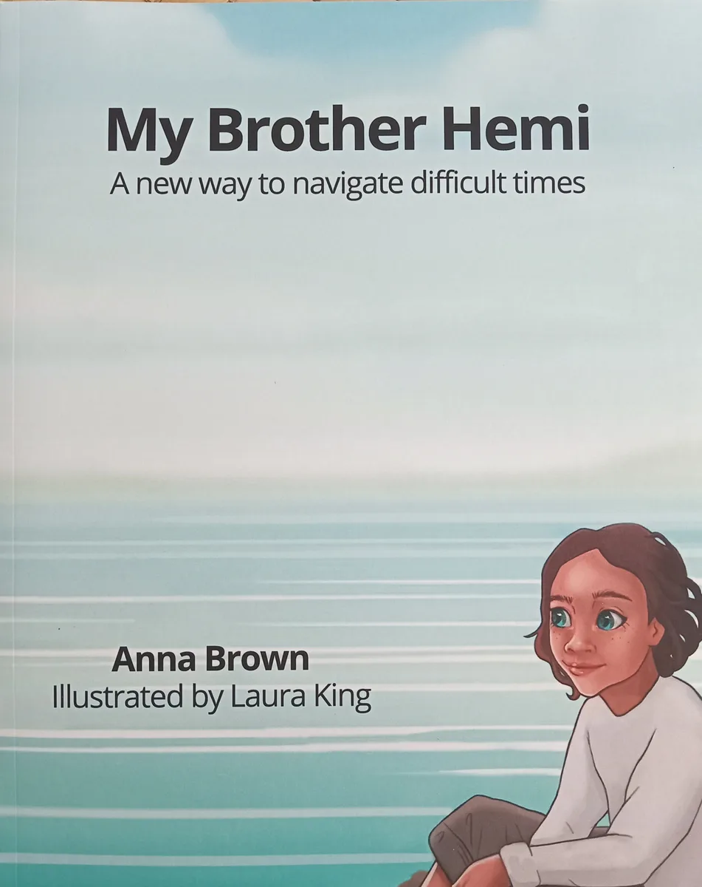

Short story · Readers aged 8+
My Brother Hemi
A new way to navigate difficult times
Kaia learns the concepts of Hoea tō Waka from Nan, then uses them while supporting her brother Hemi through bullying at school. The story helps make ideas about thoughts, feelings, identity, compassion, and choice easier to share with young people.
Written by Anna Brown and illustrated by Laura King. A useful resource for whānau, teachers, classes, and workshop participants.